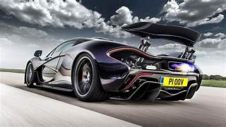

Supercars
A supercar is more than just a fast vehicle—it’s a showcase of cutting-edge engineering, extreme performance, and bold design.
These machines are built to push boundaries in speed, handling, and innovation, often serving as halo models for their manufacturers.
Key Traits of Supercars
- Performance: Top speeds often exceed 200 mph, with acceleration from 0–60 mph in under 3 seconds.
- Engineering: Lightweight materials like carbon fiber, advanced aerodynamics, and hybrid or high-output combustion engines.
- Design: Striking, futuristic aesthetics that emphasize both beauty and function.
- Exclusivity: Limited production numbers, making them rare and highly sought after.
- Technology: Cutting-edge systems such as active aerodynamics, advanced suspension, and driver-assist features tailored for high-speed control.
Examples
- Bugatti Bolide: Track-focused hypercar with extreme aerodynamics and over 1,800 horsepower.
- Koenigsegg Jesko: Designed for speed records, featuring advanced transmission technology.